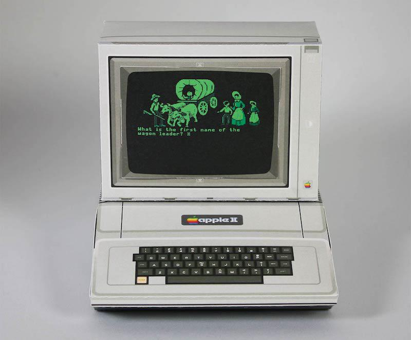

public: True class: center, middle # x86-64 蒋炎岩 <jyy@nju.edu.cn> 南京大学计算机软件研究所 --- # 概述 > 都 9012 年了，课堂上/PA 以 x86 (IA32) 为主授课？ > > 但实际我们面对的代码都是 64 位的啊！ ---- * 机器字长的发展 * ABI * x86-64 体系结构 --- class: center, middle # 机器字长的发展 --- # 字长 (Word Size) > In computing, a word is the natural unit of data used by a particular processor design. The *number of bits in a word* (the word size, word width, or word length)... * 能直接进行整数/位运算的大小 * 指针的大小 (索引内存的范围) --- # 8 位机 (6502) 16 bit PC 寄存器 (64 KiB 寻址能力，KiB 级内存) * Apple II; Atari 2600; NES; ... .center[] --- # 16 位机 (8086) 我们需要更大的内存！更大的数据宽度！ * 20 bit 地址线 (两个寄存器) * 图形界面、3D、中文 (UCDOS, ...) .center[] --- # 8086 寻址模式 `CS/DS/ES/SS` 四个 “段寄存器” * 下一条指令地址：`(R[%CS] << 4) | R[%IP]` ---- * 32 bit 模式下变为 segment selector * 64 bit 模式下不推荐用于计算数据偏移 * 后来增加了 `FS/GS` 用于 thread-local 等 --- # 32 位机 (Intel x86) 8086 处理器 4,096 倍的地址空间 * 4 GiB 内存在 1980s 看起来是非常不可思议的 * 能够支持相当大规模的 3D 游戏 (需要显示加速卡配合) .center[<img src="/static/wiki/ics/2019/img/nfs9.jpg" width="480px"/>] --- # 64 位机 (x86-64) 64 位地址空间能索引 17,179,869,184 GiB 内存 * 我们的服务器有 128 GiB 内存 * 目前看起来是非常够用的 (PML4 + Hugepages) * 现在的处理器一般实现 48 bit 物理地址 --- # Fun Facts `int` 类型的长度 * 8 bit computer: 8 bit * 16 bit computer: 16 bit * 32 bit computer: 32 bit * 64 bit computer: .red[32 bit] * JVM (32/64 bit): .red[32 bit] ---- 在逻辑世界里描述日常世界，2,147,483,647 已经足够大了 --- class: center, middle # 理解 ABI --- # 程序的机器级表示 程序经历 `.c -> .o` (编译) 和 `.o -> a.out` (链接) * 不同版本甚至不同编译器输出的二进制文件都可以链接 * 他们需要一个 “共同语言” ---- 例如我们熟悉的 x86 calling convention * cdecl (Linux) * stdcall (Win32) * 只要遵循标准的函数就可以互相调用 --- # Application Binary Interface (ABI) 区别于 API (Application Programming Interface) * 程序源代码中的规范 ---- ABI：约定 binary 的行为 * 二进制文件的格式 * 函数调用、系统调用…… * C 语言规范只定义了运行时内存和内存上的计算 * `printf` 都无法实现，必须借助外部库函数 * 链接、加载的规范 --- # 例子：cdecl 函数调用 caller stack frame: * 所有参数以.red[数组]的形式保存在堆栈上 (所以才有 “反序压栈”) * 然后是返回地址 * 跳转到 callee ---- callee: * EAX 作为返回值 * 其他寄存器都是 callee save ```c void bar(int *); int foo(int x) { bar(&x); return x; } ``` --- # 阅读汇编代码：“符号执行” 试着把内存/寄存器用数学符号表示出来 * 例如假设堆栈上的数值是 <math>x_0, x_1, \ldots </math> * 然后根据每条指令的行为，用符号表示计算机系统的当前状态 ---- 编译选项：`-m32 -O2 -fno-pic` (便于大家理解) ```assembly 000004f0 <foo>: 4f0: 83 ec 18 sub $0x18,%esp 4f3: 8d 44 24 1c lea 0x1c(%esp),%eax 4f7: 50 push %eax 4f8: e8 13 00 00 00 call 510 <bar> 4fd: 8b 44 24 20 mov 0x20(%esp),%eax 501: 83 c4 1c add $0x1c,%esp 504: c3 ret ``` --- class: center, middle # x86-64：寄存器与函数调用 --- # 寄存器 (1)：继承自 IA32 | 用途 | 64b | 低32b | 低16b | 低8b | 8-15b | | ---------------- | ---- | ----- | ----- | ----- | ------ | | 返回值 | %rax | %eax | %ax | %al | %ah | | .red[调用者保存] | %rbx | %ebx | %bx | %bl | %bh | | 参数4 | %rcx | %ecx | %cx | %cl | %ch | | 参数3 | %rdx | %edx | %dx | %dl | %dh | | 参数2 | %rsi | %esi | %si | %sil | | | 参数1 | %rdi | %edi | %di | %dil | | | .red[调用者保存] | %rbp | %ebp | %bp | %bpl | | | 栈顶 | %rsp | %esp | %sp | %spl | <span></span> | --- # 寄存器 (2)：新增加的寄存器 x86-64 扩充了很多寄存器！ * 于是再也不用像 IA32 那样，用堆栈传递参数了！！ | 用途 | 64b | 低32b | 低16b | 低8b | 8-15b | | ---------------- | ---- | ----- | ----- | ----- | ------ | | 参数5 | %r8 | %r8d | %r8w | %r8b | | | 参数6 | %r9 | %r9d | %r9w | %r9b | | | .red[调用者保存] | %r10 | %r10d | %r10w | %r10b | | | 链接 | %r11 | %r11d | %r11w | %r11b | | | C unsued | %r12 | %r12d | %r12w | %r12b | | | .red[调用者保存] | %r13 | %r13d | %r13w | %r13b | | | .red[调用者保存] | %r14 | %r14d | %r14w | %r14b | | | .red[调用者保存] | %r15 | %r15d | %r15w | %r15b | (没有) | --- # A + B in x86-64 ```c int f(int a, int b) { return a + b; } ``` ---- ```assembly 00000510 <add_32>: 510: 8b 44 24 08 mov 0x8(%esp),%eax 514: 03 44 24 04 add 0x4(%esp),%eax 518: c3 ret ``` ---- ```assembly 0000000000000630 <add_64>: 630: 8d 04 37 lea (%rdi,%rsi,1),%eax 633: c3 retq ``` --- # max in x86-64 ```c int max(int a, int b) { if (a > b) return a; else return b; } ``` ---- ```assembly 00000514 <max_32>: 514: 8b 44 24 04 mov 0x4(%esp),%eax 518: 3b 44 24 08 cmp 0x8(%esp),%eax 51c: 7d 04 jge 522 <max+0xe> 51e: 8b 44 24 08 mov 0x8(%esp),%eax 522: c3 ret ``` ---- ```assembly 0000000000000640 <max_64>: 640: 39 f7 cmp %esi,%edi 642: 89 f0 mov %esi,%eax 644: 0f 4d c7 cmovge %edi,%eax 647: c3 retq ``` --- # 使用寄存器传递函数参数：优势 支持 6 个参数的传递：rdi, rsi, rdx, rcx, r8, r9 * callee 可以随意修改这 6 个寄存器的值 * 编译器有了更大的调度空间 ---- 例子： ```c void plus(int a, int b) { fprintf(stdout, "%d + %d = %d\n", a, b, a + b); } ``` --- # 例子：调用 `fprintf` 实际调用的是 `__fprintf_chk@plt` * 需要传递的参数：`stdout`, `%d + %d = %d\n`, `a`, `b`, `a + b` * calling convention: rdi, rsi, rdx, rcx, r8, r9 ---- ```assembly 0000000000000700 <plus>: 700: 44 8d 0c 37 lea (%rdi,%rsi,1),%r9d 704: 89 f9 mov %edi,%ecx 706: 48 8b 3d 03 09 20 00 mov 0x200903(%rip),%rdi # 201010 <stdout@@GLIBC_2.2.5> 70d: 48 8d 15 b0 00 00 00 lea 0xb0(%rip),%rdx # 7c4 <_IO_stdin_used+0x4> 714: 41 89 f0 mov %esi,%r8d 717: 31 c0 xor %eax,%eax 719: be 01 00 00 00 mov $0x1,%esi 71e: e9 5d fe ff ff jmpq 580 <__fprintf_chk@plt> ``` --- # 一些更多的分析 `plus` 的最后一条指令： ```assembly 71e: e9 5d fe ff ff jmpq 580 <__fprintf_chk@plt> ``` ---- * 并不是调用的 `printf`，而是调用的[有堆栈检查的版本](http://refspecs.linuxbase.org/LSB_4.1.0/LSB-Core-generic/LSB-Core-generic/libc---printf-chk-1.html) * 准备参数时有 `mov $0x1, %esi` * 直接 `jmp` 是因为函数末尾默认有一条 `ret` 指令 * 借用了 `__fprintf_chk@plt` 的 `ret` 指令返回到 `plus` 的调用者 * 如果有返回值，就会生成 `call` 指令；如果 `plus` 返回 `printf` 的结果，依然是 `jmp` * 省的不止是一条指令 * 连续的 `ret` 对分支预测是很大的挑战 --- # 对比 32 位 `printf` 好读，冗长，浪费了很多计算资源 * push/pop 将参数保存到堆栈中 * 但读起来的确容易那么一些 ```assembly 000005b4 <plus>: 5b4: 83 ec 14 sub $0x14,%esp 5b7: 8b 44 24 18 mov 0x18(%esp),%eax 5bb: 8b 54 24 1c mov 0x1c(%esp),%edx 5bf: 8d 0c 10 lea (%eax,%edx,1),%ecx 5c2: 51 push %ecx 5c3: 52 push %edx 5c4: 50 push %eax 5c5: 68 60 06 00 00 push $0x660 5ca: 6a 01 push $0x1 5cc: ff 35 00 00 00 00 pushl 0x0 5d2: e8 fc ff ff ff call 5d3 <plus+0x1f> 5d7: 83 c4 2c add $0x2c,%esp 5da: c3 ret 5db: 90 nop ``` --- # Quiz 在 IA32 中，函数参数用堆栈传递；x86-64 按寄存器传递参数 * `void f(int x) {... &x ...}` 会发生什么？ -- count: false ---- 编译器会给参数分配内存，保证后续访问合法 * 给编译器带来了轻微的负担 (误 * 但编译器并不觉得这是负担…… ```c void bar(int *); int foo(int x) { bar(&x); return x; } ``` --- class: center, middle # x86-64 下的程序 --- # `swap` in x86-64 总体来说，x86-64 是更.red[现代]的体系结构，更精简的指令序列 * `void swap(int *x, int *y);` 交换两个指针指向的数字 ---- ```assembly mov 0x8(%esp),%edx mov 0xc(%esp),%eax mov (%edx),%ecx mov (%eax),%ebx mov %ebx,(%edx) mov %ecx,(%eax) pop %ebx ret ``` ---- ```assembly mov (%rdi),%eax mov (%rsi),%edx mov %edx,(%rdi) mov %eax,(%rsi) retq ``` - --- # 例子：循环 ```c int fact(int n) { int res = 1; do { res *= n; n--; } while (n > 0); return res; } ``` ---- ```assembly mov $0x1,%eax nopl (%rax) .L1: imul %edi,%eax sub $0x1,%edi test %edi,%edi jg .L1 repz retq ``` 两个诡异代码： * `nopl (%rax)`：内存对齐(padding) * `repz retq`：防止连续分支指令 --- # 例子：递归 自己调用自己 = 自己调用其他人 * 只不过需要安排好寄存器的数值 (这段代码怎么阅读？) ```c 0000000000000704 <fib>: 704: 55 push %rbp 705: 53 push %rbx 706: 89 fd mov %edi,%ebp 708: 31 db xor %ebx,%ebx 70a: 48 83 ec 08 sub $0x8,%rsp 70e: 83 fd 01 cmp $0x1,%ebp 711: 7e 0f jle 722 <fib+0x1e> 713: 8d 7d ff lea -0x1(%rbp),%edi 716: 83 ed 02 sub $0x2,%ebp 719: e8 e6 ff ff ff callq 704 <fib> 71e: 01 c3 add %eax,%ebx 720: eb ec jmp 70e <fib+0xa> 722: 8d 43 01 lea 0x1(%rbx),%eax 725: 5a pop %rdx 726: 5b pop %rbx 727: 5d pop %rbp 728: c3 retq ``` --- class: center, middle # C++ --- # 怎么把 C 和 C++ 的代码链接到一起？ 只要遵循了 ABI，所有的 object file 都可以连接到一起！ ---- ```c++ extern "C" { int foo() { return 0; } } int bar() { return 0; } ``` ---- ```assembly 0000000000000000 <foo>: 0: 31 c0 xor %eax,%eax 2: c3 retq 0000000000000010 <_Z3barv>: 10: 31 c0 xor %eax,%eax 12: c3 retq ``` --- # Name Mangling: 变量 `namespace a { int bar; }` → `_ZN1a3barE` * _Z: C++ * `N1a3barE`: 符号 (N...E) * 1a → a * 3bar → bar --- # Name Mangling: 函数 `_Z <declaration> (<parameter>+ | v )` * 参数：`([PR]K?)*(<basic_type>|<function>|<user_type>)` (或 `void`) * `P` 指针；`R` 引用；`K` const * ... 一系列复杂规则 ---- `template <typename A> void foo(A);` → `_Z3fooIiEvT_` * `_Z` `3foo` * `IiE` (template: `int`) * `v` (void 返回值) * `T_` (第一个 template 参数，`T0_`, `T1_`, ...以此类推) --- # Into the Chaos 大家熟悉的 `std::endl` (太复杂了吧！) > `_ZSt4endlIcSt11char_traitsIcEERSt13basic_ostreamIT_T0_ES6_@@GLIBCXX_3.04` ---- 幸好编译器会帮我们搞定一切的 :)